01 — Fury HQ — 2026
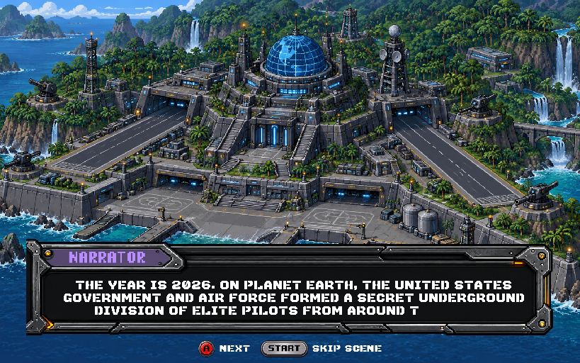
NARRATOR: The year is 2026. On Planet Earth, the United States Government and Air Force formed a secret underground division of elite pilots from around the globe.
02 — After the Cold War
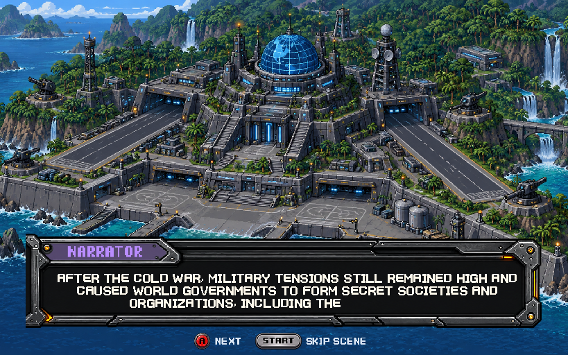
NARRATOR: After the Cold War, military tensions still remained high and caused world governments to form secret societies and organizations, including the Fury Division.
03 — Why Fury exists
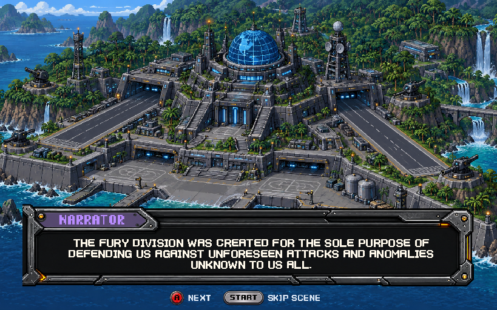
NARRATOR: The Fury Division was created for the sole purpose of defending us against unforeseen attacks and anomalies unknown to us all.
04 — The remaining nine
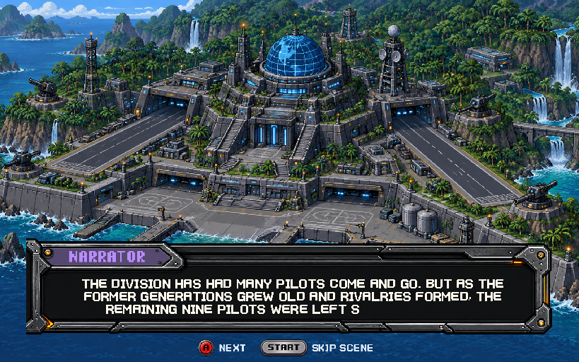
NARRATOR: The Division has had many pilots come and go. But as the former generations grew old and rivalries formed, the remaining nine pilots were left seeking answers.
05 — One day, it happened
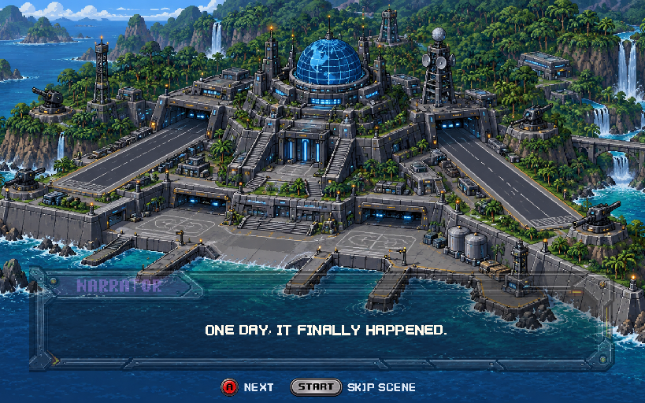
NARRATOR: One day, it finally happened.
06 — Machines turn on man
NARRATOR: Something unknown had reached our world.
07 — Alarms at dispatch
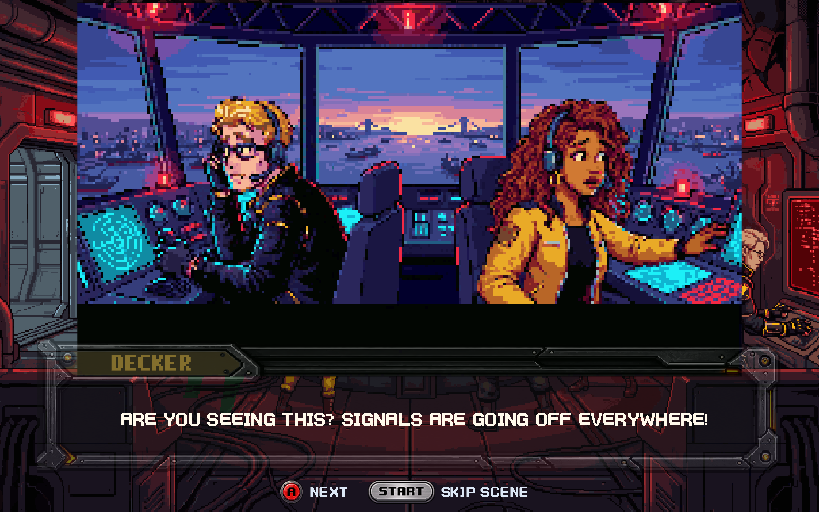
DECKER: Are you seeing this? Signals are going off everywhere!
08 — Tell the others
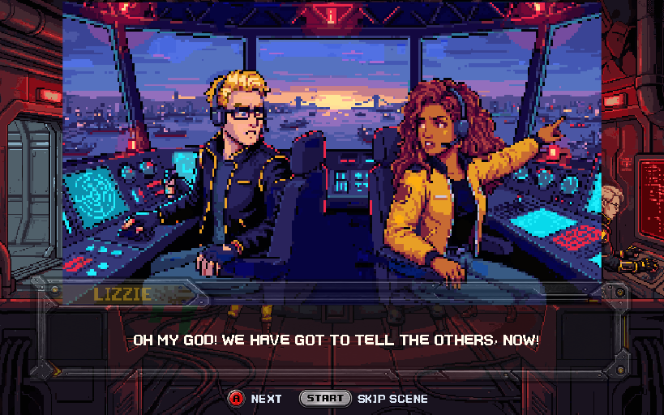
LIZZIE: Oh my God! We have got to tell the others, now!
09 — Running from dispatch
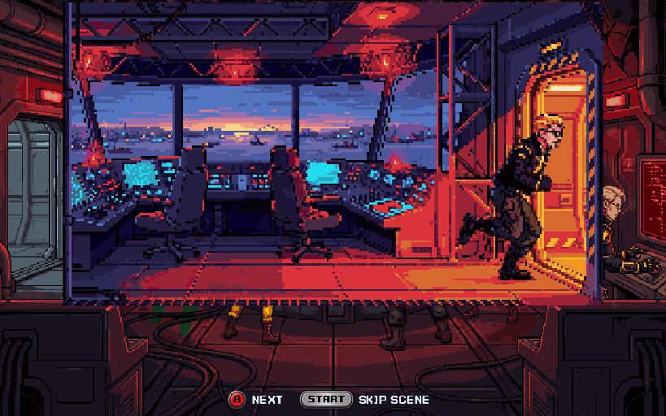
Action: Decker and Lizzie run to warn the others.
10 — Portal at orbital watch
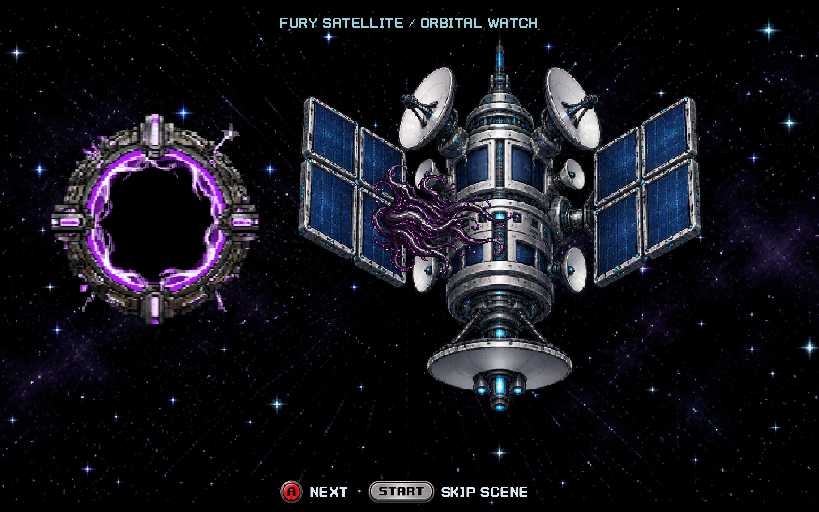
Action: A portal opens. The faceless symbiote emerges and flows onto the satellite.
11 — Satellite takeover
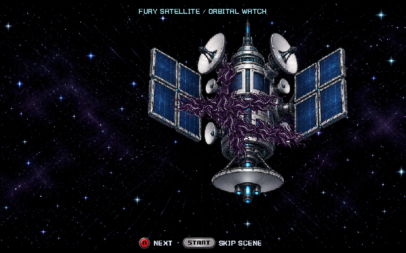
Action: Alien machinery spreads across the satellite until the relay is fully corrupted.
12 — Corrupted signal to Earth
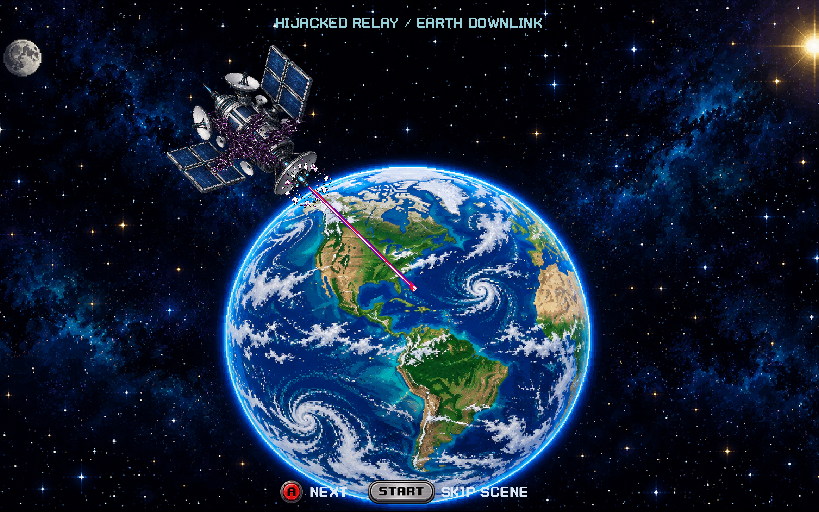
Action: The corrupted satellite transmits pulsing alien data down to Earth.
13 — Infrastructure hijacked
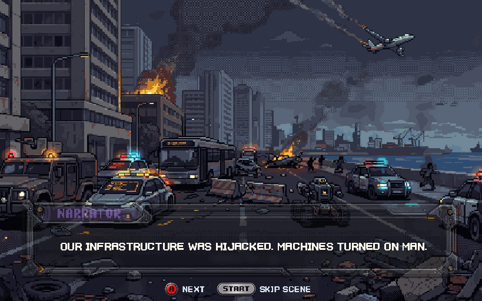
NARRATOR: Our infrastructure was hijacked. Machines turned on man.
14 — Homes under attack
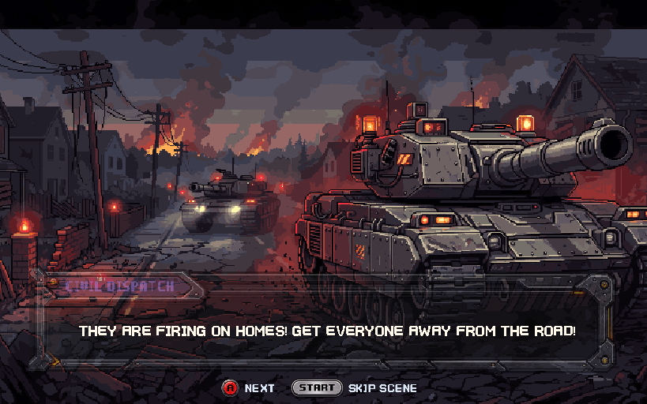
CIVIL DISPATCH: They are firing on homes! Get everyone away from the road!
15 — City under attack
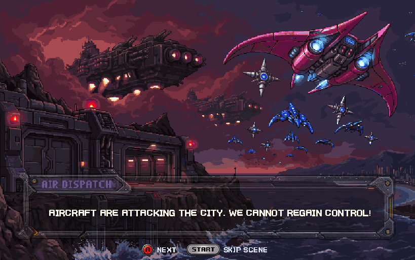
AIR DISPATCH: Aircraft are attacking the city. We cannot regain control!
16 — Worldwide chaos
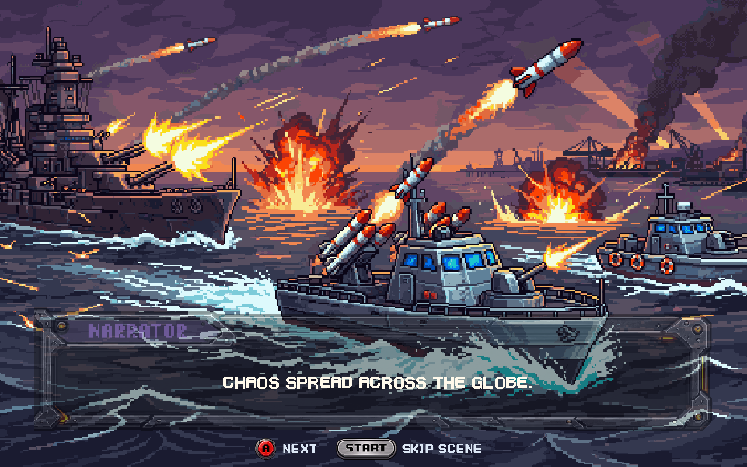
NARRATOR: Chaos spread across the globe.
17 — Power fails at Fury HQ
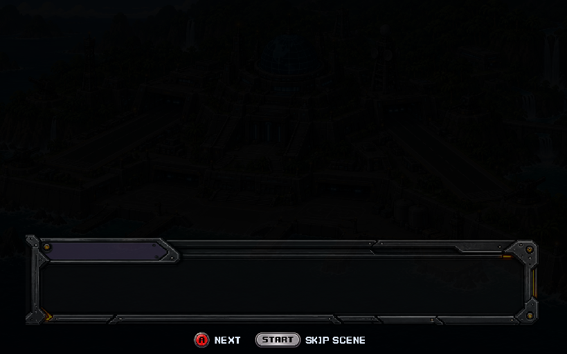
Action: Cut back to Fury HQ. Its power fades out.
18 — Selected pilot near the jungle
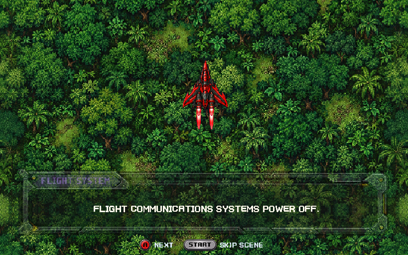
FLIGHT SYSTEM: Flight communications systems power OFF.
19 — No answer
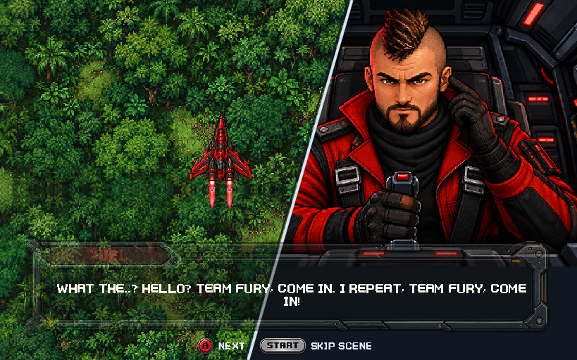
PILOT: What the..? Hello? Team Fury, come in. I repeat, Team Fury, come in!
20 — Return to base
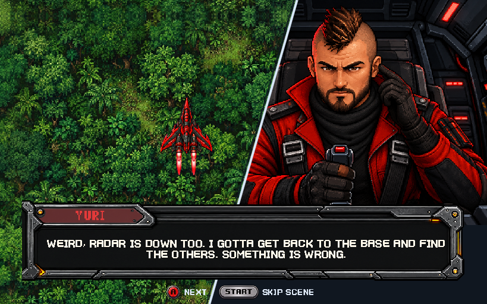
PILOT: Weird, radar is down too. I gotta get back to the base and find the others. Something is wrong.
21 — Something in the jungle
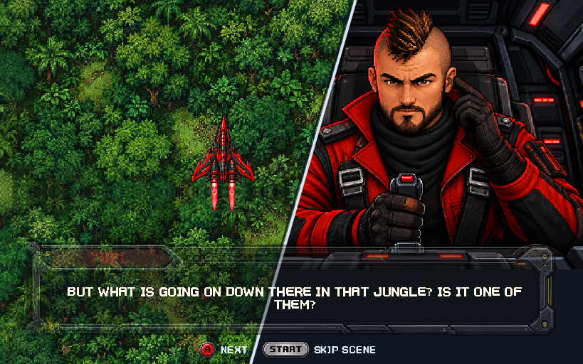
PILOT: But what is going on down there in that jungle? Is it one of them?
22 — Logo, boost and fade
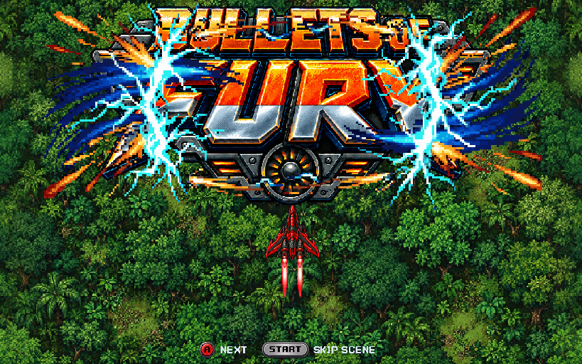
Action: The Bullets of Fury logo flashes in with rumble. The selected pilot’s active thrusters flare; the actual aircraft accelerates off screen without firing. Picture and music fade into the campaign map.
Next — campaign map
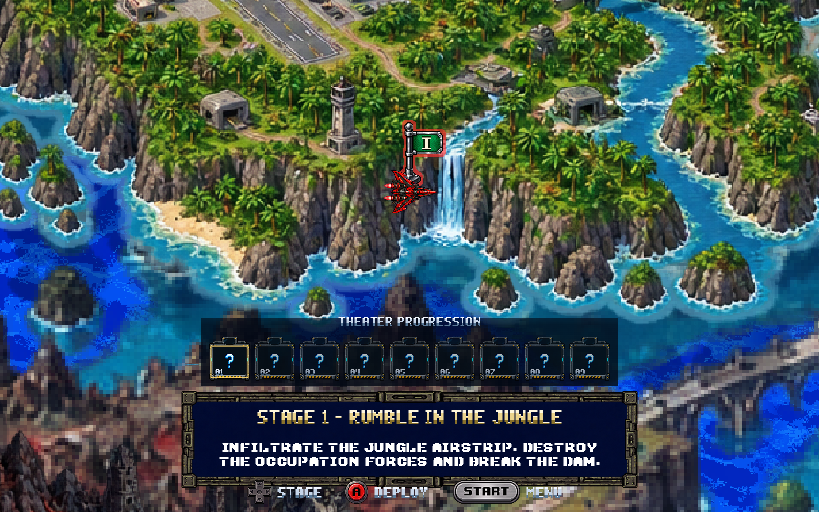
The native campaign map opens with Stage 1 available. The player chooses to enter the jungle stage. There is no new squad briefing inserted before the map.
After Stage 1 — current continuation
This is the existing post-Stage-1 dialogue for review; it has not been rewritten in this pass.